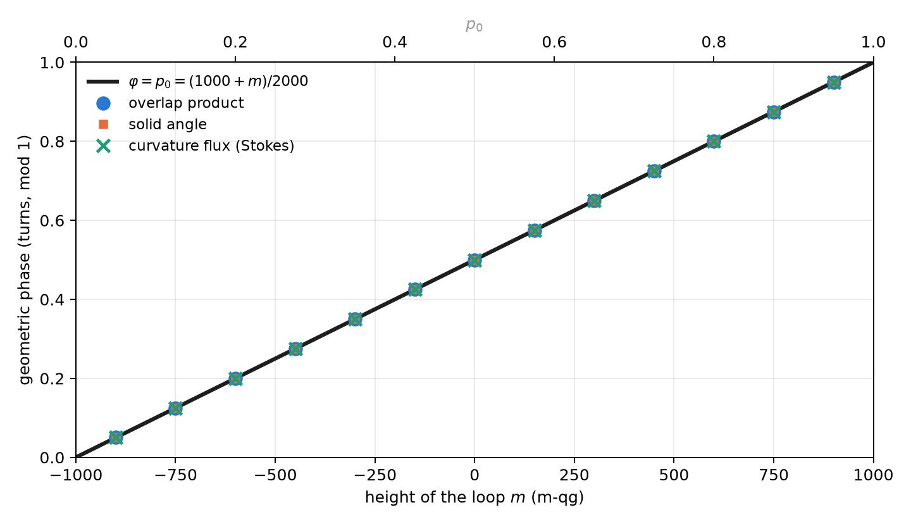
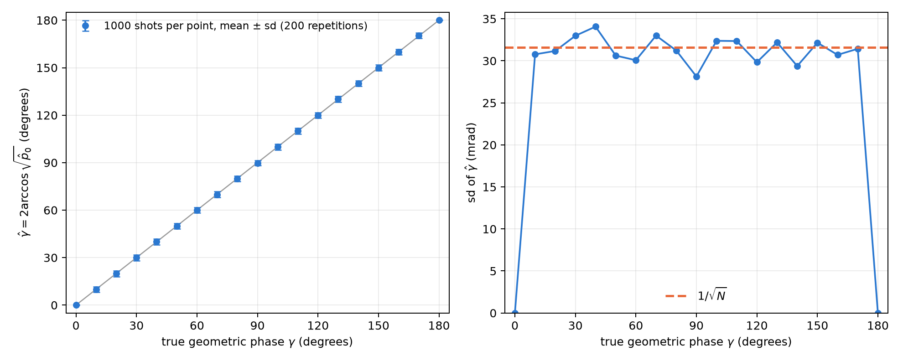

7 Geometric phases and Stokes’ theorem on the sphere
A phase is not a probability. Chapter 2 showed that the phases of a gate do not appear in its transition matrix: a \(Z\) measurement does not see them. This chapter deals with a phase that does carry physical meaning, the geometric phase a qubit picks up when carried around a closed loop, and shows that the base of Chapter 1 reaches it twice. First, its value: for a loop at constant height, the phase in turns is the probability \(p_0\). Then, its measurement: an interferometer turns it into a probability, and the qang angle of that probability is the phase (§84).
7.1 The Berry connection and curvature
If a state \(|\psi(\mathbf R)\rangle\) depends on parameters \(\mathbf R\) and is carried slowly around a closed path, besides the dynamical phase it picks up a phase that depends only on the geometry of the path. Its density is the Berry connection, \(\mathbf A=i\langle\psi|\nabla\psi\rangle\), and its curl is the curvature. For a qubit, with the state described by its qg vector on the sphere, the curvature is a monopole of strength \(\tfrac12\) at the centre: on the unit sphere its normal component is \(\tfrac12\) everywhere.
7.2 Stokes on the sphere
Stokes’ theorem turns the line integral of the connection around the loop \(C\) into the flux of the curvature through the surface it encloses. Since the curvature is uniform, the flux is \(\tfrac12\) times the area, that is, the solid angle \(\Omega(C)\):
\[ \gamma(C)=-\frac{\Omega(C)}{2}\pmod{2\pi}. \]
The phase is gauge invariant (it does not depend on the phase chosen for each state along the path) and changes sign when the loop is run backwards.
7.3 Loops at constant height: the phase is the probability
A loop around the \(Z\) axis at constant polar bias \(qg_Z\) encloses the cap above it, of solid angle \(\Omega=2\pi(1-qg_Z)\). In turns, the library’s \(qg_\Phi\) unit,
\[ \varphi=\frac{\gamma}{2\pi}=\frac{qg_Z-1}{2}=-p_1\equiv p_0\pmod 1 , \qquad \varphi=\frac{1000+m}{2000}\ \text{turns}. \]
The geometric phase of a loop at constant height, measured in turns, is the probability \(p_0\) of its height, and with the milli-qang it is a linear function of the reading. The reason is the same that made the Haar distribution uniform in Chapter 4 (Section 4.2): by Archimedes’ theorem, the fraction of the sphere in the cap above the height \(qg_Z\) is \((1-qg_Z)/2=p_1\). The solid angle is \(4\pi p_1\) and the phase \(-2\pi p_1\).
Some values: a loop at \(+500\) m-qg (\(p_0=0.75\)) picks up \(0.75\) turns, that is, \(-\tfrac14\) of a turn; one on the equator picks up half a turn, \(\pi\); one hugging the pole \(|0\rangle\), nothing. Figure 7.1 shows the line together with the three independent computations of the next section.

The equator deserves a note. There the phase is \(\pi\), and \(+\pi\) and \(-\pi\) are the same angle. A numerical computation can return either one depending on rounding, and a comparison that ignores this fails although the result is right. That is exactly what happened to one of the library’s tests, now fixed to compare on the circle.
7.4 Three independent computations
The library computes the phase in three ways that share no code and checks that they agree (14 tests):
- Overlap product (Pancharatnam): \(\gamma=-\arg\prod_k\langle\psi_k|\psi_{k+1}\rangle\) over the discretized loop, gauge invariant.
- Solid angle, as a fan of spherical triangles (Van Oosterom and Strackee’s formula). It agrees with the overlap product to \(10^{-10}\).
- Curvature flux through the cap, integrated numerically. It agrees with the line integral to \(10^{-5}\): Stokes’ theorem checked in numbers.
7.5 Measuring the phase: the interferometer and the probability equation
A \(Z\) measurement does not see the phase. Measuring it takes an interferometer: a control qubit in \(|+\rangle\) decides whether the system runs the loop, and at the end the control is measured in the \(X\) basis (Hadamard test). With the dynamical phase cancelled, for instance by an echo, the probability of reading 0 on the control is
\[ p_0=\frac{1+\cos\gamma}{2}=\cos^2\frac{\gamma}{2}: \]
Born’s rule of Chapter 1 with \(\gamma\) in place of \(\theta\). Therefore the qang angle of the measured probability is the geometric phase, \(\hat\gamma=2\arccos\sqrt{\hat p_0}\), and its milli-qang reading is \(m=1000\cos\gamma\).
Everything the base says about that angle applies to the phase. In particular, being the arcsine transformation (Section 1.8), its uncertainty is \(1/\sqrt N\) for any value of the phase. Figure 7.2 checks it with a simulation from this chapter: with 1000 shots per point, the standard deviation of \(\hat\gamma\) stays around 32 mrad (about \(1.8^\circ\)) from \(10^\circ\) to \(170^\circ\). At \(0\) and \(\pi\) it is zero because the outcome is deterministic, always 0 or always 1, and there the exact intervals of Chapter 4 are needed.

There is a limit, the same as in Chapter 1. Since \(\cos\gamma\) is even, a single probability gives \(|\gamma|\) in \([0,\pi]\), not its sign. The remedy is the branch sign (Section 1.5): measure the other quadrature too, shifting the reference phase by a quarter turn, which gives \(\sin\gamma\). The two probabilities together fix the phase on the whole circle.
7.6 Pancharatnam’s phase and the octant
For polarized light the same phase is Pancharatnam’s on the Poincaré sphere, and Chapter 6 already set up the coordinates (Section 6.1). The circuit H → D → R → H runs around an octant of the sphere: three quarter arcs of great circles enclosing one eighth of its area, \(\Omega=4\pi/8=\pi/2\). The phase is \(\gamma=-\pi/4\), one eighth of a turn backwards (\(0.875\) turns mod 1), and the library reproduces it from the three qg vectors.
7.7 Without qang and with qang
| action | without qang | with qang | difference |
|---|---|---|---|
| geometric phase of a constant-height loop | \(-\tfrac12\) of the solid angle, \(\Omega=2\pi(1-\cos\theta)\) | the phase in turns is \(p_0=(1000+m)/2000\) | equivalent; with qang it is read from a single measured probability |
| measure the phase in an interferometer | invert \(\cos^2(\gamma/2)\) with the delta method | the qang angle is the phase, with uncertainty \(1/\sqrt N\) for any value | same result in the interior: the delta method also gives \(1/\sqrt N\); qang gives it without a derivative. At \(0\) and \(\pi\) both give zero width and the intervals of Chapter 4 are needed |
| the sign of the phase | second quadrature | second quadrature | none: the limit is the same |
Balance. The Berry phase is the same with or without qang; what the scale adds is reading it from a single probability and having its error bar without deriving anything. It adds no precision.
7.8 In code
import math
import numpy as np
from qang import geometric
geometric.cone_phase_turns(0.5) # 0.75 turns = p0 at +500 m-qg
geometric.cone_phase_turns(0.0) # 0.5: the equator, half a turn
# discretized loop at qg_Z = 0.8: the phase from overlaps, in turns
r = math.sqrt(1 - 0.8 ** 2)
loop = [np.array([r * math.cos(a), r * math.sin(a), 0.8]) for a in np.linspace(0, 2 * math.pi, 400, endpoint=False)]
geometric.geometric_phase_qg(loop).phi # 0.9 (= p0 = 0.9)
octant = [np.array([0, 0, 1.0]), np.array([1.0, 0, 0]), np.array([0, 1.0, 0])] # H, D, R
geometric.geometric_phase_qg(octant).phi # 0.875: -1/8 of a turnThe figures are generated by tools/make_cap07_figures.py.
7.9 Summary
- The geometric phase of a closed loop is minus half the solid angle it encloses: Stokes’ theorem with the Berry curvature, a monopole of strength \(\tfrac12\).
- For a loop at constant height, the phase in turns is \(p_0\) (mod 1), that is, \((1000+m)/2000\): the same Archimedean reason that makes the Haar measure uniform in m-qg.
- Three independent computations (overlaps, solid angle, curvature flux) agree to \(10^{-10}\) and \(10^{-5}\).
- An interferometer turns the phase into the probability \(\cos^2(\gamma/2)\); its qang angle is the phase, with uncertainty \(1/\sqrt N\) for any value, and the sign needs a second quadrature.
- The polarization circuit H → D → R → H encloses an octant and picks up \(-\pi/4\).
Bibliographic notes
The geometric phase is that of Berry (1984), anticipated in optics by Pancharatnam (1956). Its extension to non-adiabatic cyclic evolutions is Aharonov and Anandan (1987), and the general formulation with the Pancharatnam connection, Samuel and Bhandari (1988). The numbered research notes (§) cited in this chapter and the scripts that check it are in the repository (Monteverde 2026a); the definition of the qang unit is in Monteverde (2026b).